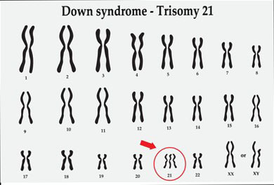

SCIENCE
Why Do Some People Have Down Syndrome?
At the chromosomal level, someone with Down Syndrome has an extra copy or an extra partial copy of chromosome 21 (often called “Trisomy 21”) (Gill, 2019). This extra chromosome is present in all of the cells that make up the individuals body, and can lead to some organs developing differently than what we consider to be "normal".
The extra 21st chromosome stems to the formation of the parents gametes - an error called nondisjunction occurs. Nondisjunction occurs in either one of the parents gametes, when the homologous chromosomes/sister chromatids for chromosome 21 fail to separate during meiosis I or II. This results in an unequal distribution of chromosomes in the daughter cell, creating a child with an extra chromosome during fertilization, as the cell with less chromosomes usually will not survive. Down syndrome usually results from nondisjunction of the mothers eggs, but 5% of cases have been traced back to the father (Down Syndrome, 2018).
Risk Factors
- Advancing maternal age - Older eggs are more likely to have an error in chromosome separation during meiosis Increasing paternal age also increases the chances slightly (Down Syndrome, 2018).
- The mother or father is a carrier of Translocation Down Syndrome - Accounts for 3% of cases (Down Syndrome, 2018)
Related Terms
Mosaic Down Syndrome - The child is born an extra copy of chromosome 21 in only some cells - fewer symptoms (Gill, 2019).
Translocation Down Syndrome - Additional portion of chromosome 21 becomes attached onto another chromosome set - slight hereditary component (Gill, 2019).
More About Down Syndrome
About 1 in 750 babies are born with Down Syndrome in Canada (Down Syndrome, 2018). Of these babies, doctors can usually tell when a screening test is necessary upon birth (Diagnosis & Treatment, n.d.). This is because each cell has an extra chromosome as the fetus is developing, so certain features (slanted eyes, palm crease, etc) develop from the very beginning In other words, Down Syndrome becomes manifests (becomes visible) as soon as the baby can be seen clearly.